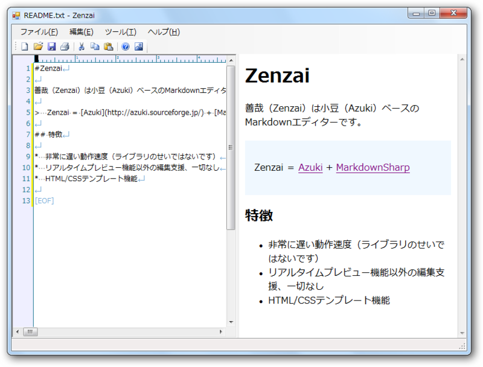
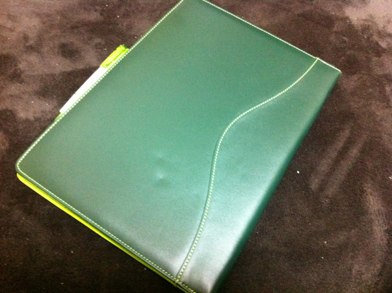
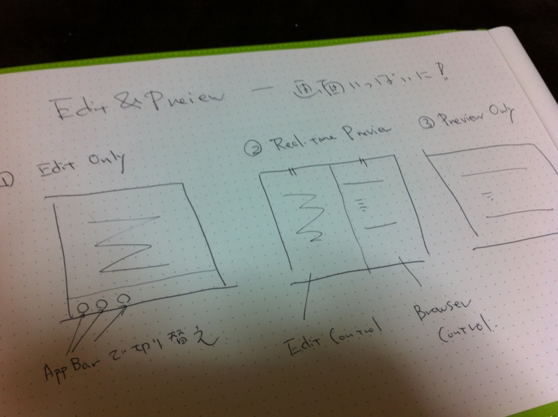
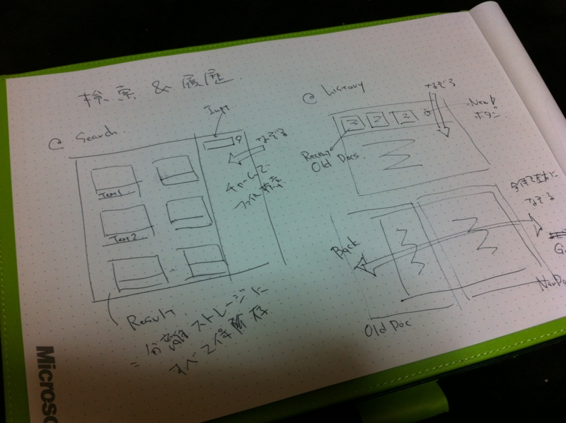
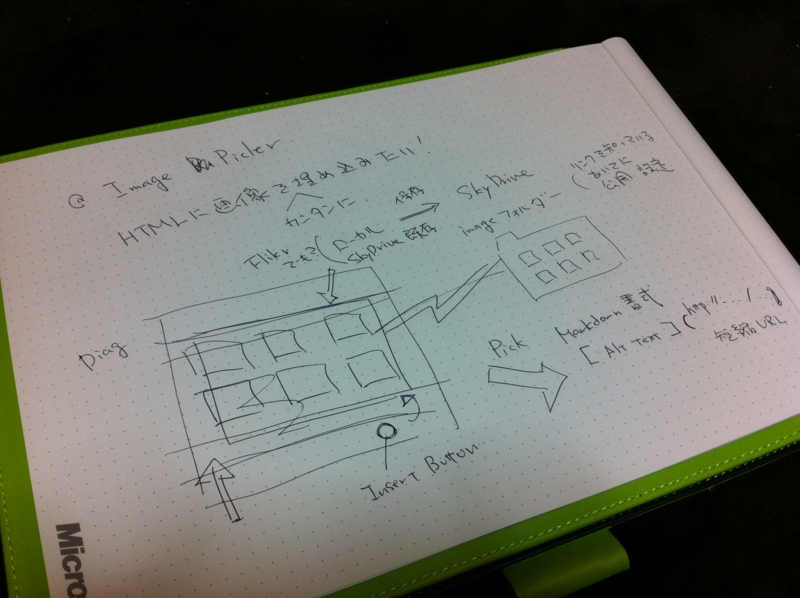
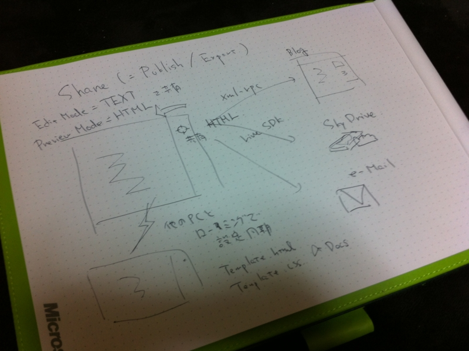

UX ってのがなんだかイマイチ理解しきれてないけど、自分なりに考えてみた
公開日：
WDD の話の続きのようなもの。
これに関する話題をあちこちで読んでみたけど、 小野和俊のブログ:Metro UIは「UXアプリ養成ギプス」 が言い得て妙でわかりやすいなぁ、と思った。
メトロデザインで必要とされることの一つに「全体のデザインの統一性」が挙げられると思う。「統一されたデザイン」は、使いやすい。ネガティブにとらえるならそれは「制限」に過ぎないのだけど、その分「凝縮」されており、よく練られた「UX思想の土台」になっている。メトロをみると、今までの（Windows）アプリって、自由すぎて無駄が多く、開発者＆ユーザーの思考・試行・空間・時間が知らず知らずのうちに浪費・発散してしまっていたのではないかな、と感じてしまう。
iPhone が登場し、あの迫っ苦しい画面と貧弱なリソースでもデスクトップと同等またはそれ以上の「凝縮された体験」が楽しめるということが実証された。そしてそれが、今度はタブレットへと拡張されつつある。メトロはそれの追随だと思うけれど、iOS がやった以上の「凝縮」を成し遂げているように見えるし、たんなるスマフォからタブレットへのスケールアップにとどまらない機能を提供していると思う*1。
まぁ、それはともかく。

今、僕は簡単な Markdown エディターを作っているのだけど、 WWD いってきたよ！ - だるろぐ でいろいろ学んだおかげもあって、ちょっといろいろ改造したくなってきた。メトロをアレだけ見ちゃうと、今作ってるヤツは「コレジャナイーイ」感が半端ない。

どーせならWDDで得た成果を活かして、UX（ユーザーエクスペリエンス）を考えたモノに改造したい。WDDでもらったでっかいメモ帳に、適当にアイデアをまとめていくよ！
編集とプレビュー

このアプリでやりたい・実現したいユーザー体験は、Markdownテキストの編集とHTMLのプレビュー。だから、それを全面に押し出すよ！ 全画面フルに使って編集＆プレビューしてください。
検索・履歴

もうひとつ実現したいのは、以前に書いたテキストを簡単に呼び出せるということ。Windows フォームだったら、検索や履歴機能は小さなメニューへ押し込まれているのが普通だけど、せっかくのメトロスタイルアプリなんだから、その体験はぜひもっとアクセスしやすく、楽しく使えるようにしたい。
たとえば、検索機能はチャームから。ストレージに溜め込まれたドキュメントから目的の物を探し出し、サムネイルで並べる。
履歴機能はAppバーから。Internet Explorer 10 のタブみたいな感じにしたい。このアプリにタブという概念はないけれど、強いて言えば“過去の履歴＝タブ”みたいな感じに見えるようにしたい。
もうひとつ考えたのは、左右フリックでの［戻る］［進む］操作。履歴機能のほとんどって、［戻る］［進む］じゃない？ だったら、フリック（またはキーボードショートカット）で手軽に使えたらすごく便利だぞ。ちょっとリッチな書式をもつメモ帳のようにも使ってほしいから、ページをめくるように使えたらいい。しかも、このメモ帳にはページがほとんど無限大にある！
（あー、ページ内検索機能はどうしよう……メトロ版IE10での実装を今度参考にしてみるか）
イメージピッカー

HTMLドキュメントに画像を埋め込む作業も少し考えないと。デスクトップと違ってドラッグ＆ドロップというわけにもいかないし。
とりあえず、このアプリに画像を埋め込むときは SkyDrive （決め打ち！）を使うようにしてみればどうだろうか。ローカルイメージを選択したら、それを SkyDrive へアップロードして短縮URLを取得し、Markdown の書式として挿入する。もとから SkyDrive や Flickr といったオンラインストレージに保存されているイメージなら、そのままURLを取得すればイイ。けれど、オフラインの時困るかな……とりあえずローカルパスを埋め込んで、オンラインの際にそれをクラウドへアップロード・置換するというので何とかなりそうだけど。
保存・共有

最後はエクスポート。これはチャームの［共有］から行う。XML-RPCでブログへ送ったり、SkyDrive なんかにファイルとして吐き出したり、メールで送ったり。
エディットモードで共有したときはテキスト形式で、プレビューモードで共有したときはHTML形式で共有。ここはメニューを増やさず（テキストとして共有とかHTMLとして共有とか）、なるべく規約ベースで機能を表現したい。となると困るのはエディット＆リアルタイムプレビューモード（エディット画面とプレビュー画面が半々）の場合だけど……まぁ、あとで考えよう。
それにしても「ファイルとして保存」機能は必要かなぁ……できれば削りたいけど、デスクトップアプリとの連携を考えれば必要かな。
あと、複数の環境で設定をローミングできるようにもしたい。とりあえずは基本的な設定を、できれば分離ストレージの保存してあるドキュメントも全部同期させたいけど、さすがにそれは審査で怒られるかも。
===
以上、こんな感じ。実現するのがいつになるのかはわかんないけど、妄想するだけでも楽しいよね（ぁ
最近は WPF に対する理解も少し高まってきたので、メトロスタイルアプリも頑張ればいけるんじゃないかなぁ……そうだったらいいなぁ……みた感じ簡単そうなんだけどなぁ……
WDD にいくまでは Markdown エディターのUXを考えようだなんて、思いつきもしなかった……。それも、メトロという「制限」にして「UX思想の土台」があったればこそだと思う。
*1:セマンティックズームとか